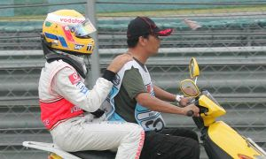
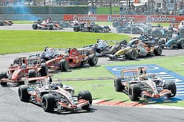
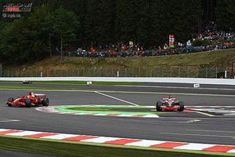
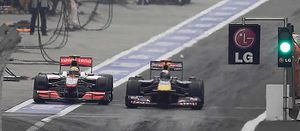
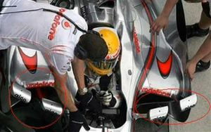

Reglamento Oficial de la Fórmula 1 de Hamilton
 De: La Frikipedia, la enciclopedia extremadamente seria.
De: La Frikipedia, la enciclopedia extremadamente seria.
 Hamilton tras perder todos los puntos de su carnet.
«Ni robando le ganan a Fernando. Enhorabuena Ferrari & Kimi»
~ El Gran Yo Supremo
«¿Quiénes? Yo ya les eché de casa. Ahora los aguantáis vosotros»
~ Mamá Hamilton
«Mira los tejemanejes y para nada. Darían pena si no merecieran eso y mucho más»
~ Aspaña acerca del dúo Hamiltongo
«Queríamos un campeón inglés, hacía tiempo que no había»
~ Hijo de la ¿Gran? Bretaña hablando del favoritismo
«Si ya le dije que se llevara el carné al salir de casa»
~ Machupichupa Ping del Pong
Por fin, ya está aquí, ya llegó, el verdadero reglamento oficial de la Fórmula 1 que se les aplica a todos los pilotos a excepción de Lewis Hamilton (a quien llamaremos Jaimito, más que nada, por joder), que tiene el suyo propio con normativas de las temporadas 2007 y 2010 y actualizado a la temporada 2014 by Bernie Ecclestone.
Ahora, gracias a este nuevo reglamento, los entendidos de la Fórmula 1 podréis volver a estar al día con las sanciones y favoritismos de la Ma-FIA.
Ya no habrá quien te pare, Antonio Lobato, porque con este nuevo reglamento, podrás responder a grandes preguntas de la humanidad como ¿Por qué Jaimito tiene que ir siempre acompañado de su papi? u otras como ¿Qué hacen el padre de Jaimito y Ron Dennis todo el día metidos en el motorhome? .
En este resumen del reglamento, podréis leer las correspondientes reglas aplicables a cada uno de los pilotos y posteriormente en cursiva la adaptación de esa regla en el reglamento de la Formula 1 de Jaimito. Espero poder ayudar a mucha gente que esta empezando a ver la F1, y sobre todo a Jaimito, a quien le doy todo mi apoyo y le dedico este libro con tal de que se quite la gilipollez y la imbecilidad que lleva encima.
Nota: Todo el dinero recaudado de este libro ira destinado a pagar todas las multas de aparcamiento que le han puesto a Jaimito tras aparcar estúpidamente su monoplaza en la puzolana a la entrada de boxes del GP de China, así como la rematriculación en la autoescuela al perder el carnet
El monoplaza
- Los monoplazas que estén corriendo deben ser idénticos.
- Los monoplazas que esté corriendo deben ser idénticos menos el de Jaimito, que podrá llevar una rueda de repuesto, un cabrestante y un teléfono para llamar a la grúa en caso de salirse de la pista.
- Cada piloto debe tener su propio número. Además, para distinguir más fácilmente aun piloto del otro, uno debe tener la cámara superior pintada en color rojo fosforescente, mientras que el otro en color amarillo fosforescente.
- Jaimito podrá adjudicarse cualquier nº de un piloto para sumar puntos siempre que él no lo haya hecho. Además podremos diferenciar su coche del de los demás porque podremos ver la ruedas traseras destrozadas.
Clasificación final
- Todo piloto que haya completado más del 90% de la carrera será calificado al final de esta, independientemente de si estaba corriendo o no cuando el ganador cruzó la meta.
- Jaimito será calificado incluso jugando al F1 de la PlayStation desde su casa y a ser posible, con la máxima puntuación.
- Si la carrera es detenida, se tendrá en consideración la posición de los pilotos dos vueltas antes de haberse producido la detención.
- Si la carrera es detenida, se tendrá en consideración la posición de los pilotos cuando Jaimito iba primero.
Penalizaciones
- Hay dos tipos de penalizaciones básicas: drive-through y stop & go.
- El drive-trough implica que el piloto ingrese al sector de boxes y atraviese el mismo sin detenerse a la máxima velocidad permitida en calle de boxes. Si la carrera ya hubiera finalizado, se añadirán 25 segundos al tiempo del piloto.
- Jaimito deberá ingresar en el sector de boxes, pero podrá atravesarlo a la máxima velocidad que le permita su motor. Si la carrera ya hubiera finalizado, se recurrirá la sanción y será invalidada [1].
- La de stop & go implica entrar a boxes, detenerse en el sector de recambio de neumáticos y esperar 10 segundos antes de salir nuevamente. Durante ese tiempo no se permite realizar ninguna tarea sobre el vehículo.
- Jaimito se verá obligado a entrar en boxes, detenerse en el sector de boxes y esperar 10 segundos. Podrá repostar y cambiar neumáticos, incluso podrá salir del monoplaza para ir al WC, todo ello sin perder ni una sola plaza al volver a la carrera.
- En caso de detectarse anomalías en clasificación o entrenamientos, el piloto puede ser retrasado 10 lugares en la parrilla
- En caso de detectarse anomalías en la clasificación o en los entrenamientos por parte de Jaimito, este será retrasado 10 puestos en la parrilla de salida, pero para que no pierda ninguna posición, los demás pilotos también tendrán una sanción de 10 puestos.
- Nota: Todos sabemos que Jaimito jamás será penalizado. Todo lo que han leído ahí arriba es pura burocracia.
Parque cerrado
- En el parque cerrado es donde los monoplazas quedan para una revisión técnica por parte de los ingenieros de la Ma-FIA. Deben quedar allí desde las 18:30 horas del sábado hasta las 08:30 horas del Domingo
- El coche de Jaimito deberá estar como muy tarde a las 08:15 horas del domingo, porque lo necesita para salir de fiesta en sábado por la noche.
- Se pueden realizar algunas tareas en el vehículo mientras el mismo está en el parque cerrado, pero son mínimas, con la intención de evitar que el set-up de carrera sea diferente al set-up de clasificación. Las tareas permitidas son: se puede agregar combustible a los monoplazas (para equiparar el combustible con el que salieron a clasificar), colocar gomas nuevas, purgar el sistema de frenos y ajustar los alerones delanteros y traseros una cantidad predeterminada de grados.
- Jaimito podrá realizar todas la acciones anteriores y además podrá sabotear los monoplazas de sus compañeros.
- Cambio de motor implica salir desde el fondo de la parrilla, mientras que cambios en la suspensión implican arrancar desde calle de boxes.
- En caso de que Jaimito tenga que cambiar de motor y tenga que salir desde la ultima posición, la maFIA, cambiará el sentido del circuito para que pueda salir desde la primera. En caso de que Jaimito deba salir desde la calle de boxes por cambio de suspensión, esto no será ningún problema, porque esa suspensión le permitirá saltarse las chicanes e ir campo a través, todo ello sin ser penalizado.
Puntuación
- El sistema de puntuación afecta a los 10 primeros en llegar de la siguiente forma:
- 1º: 25 puntos
- 2º: 18 puntos
- 3º: 15 puntos
- 4º: 12 puntos
- 5º: 10 puntos
- 6º: 8 puntos
- 7º: 6 puntos
- 8º: 4 puntos
- 9º: 2 puntos
- 10º: 1 punto
- En el caso de que Jaimito no esté contento con su puntuación, podrá lanzar dos (2) dados al aire y multiplicar su resultado por otro número que le venga en gana. Si Jaimito no suma, podrá lanzar tres (3) dados al aire y sumar los puntos que den los dados y esos son los puntos de Trampilton.
- En caso de no haberse completado más del 75% de la carrera, se concederá la mitad de los puntos. En caso de suspenderse la carrera con menos de 2 vueltas dadas, no se da punto alguno.
- En caso de no haberse completado más del 75% de la carrera, se concederán a los pilotos la mitad de puntos, ya que la otra mitad de sus puntos será para Jaimito. En caso de suspenderse la carrera con menos de 2 vueltas dadas, no se da punto alguno, pero se le dan 25 puntos a Jaimito, premiándole por haber conseguido arrancar el motor de su monoplaza.
- En caso de empate de puntos, el campeonato se decide en base a quien tiene más carreras ganadas.
- En caso de haber empatado con Jaimito, la has cagado, porque Jaimito gana sí o sí.
Clasificación
- La sesión de clasificación será de 60 minutos, con múltiples vehículos en pista. Cada piloto puede dar tantas vueltas como considere necesarias dentro de los límites de tiempo. Se divide en:
- Primera tanda: Con una duración de 20 minutos, participan los 24 pilotos. Los 7 más lentos quedan fuera para la próxima ronda y son ordenados según sus tiempos.
- Segunda tanda: Con una duración de 15 minutos, participan los 17 pilotos restantes. Nuevamente, los 7 más lentos quedan fuera y son ordenados según sus tiempos, pero no comparados a los 7 eliminados anteriormente.
- Tercera tanda: Después de una pausa de 8 minutos, se inician los últimos 10 minutos de clasificación con los 10 pilotos restantes. Se ordenan en las posiciones del 1 al 10, siendo el más rápido quien logre la Pole position.
- Jaimito jamás, y digo jamás, podrá ser eliminado en la Q1 ni en la Q2. Si fuera necesario, se aumentará el tiempo del piloto que tiene delante para que fuera eliminado. En el caso de que en la Q3 no consiga hacer un tiempo de pole position, dará tantas vueltas como sean necesarias para conseguirla, aunque se haya agotado el tiempo disponible, alegando que no llevaba reloj y no lo sabía.
Inicio de la Carrera
 Hamilton saltándose una chicane en la salida pa no fatigarse.
 ¿Y en las últimas vueltas?
Pó tabién.
- Cada piloto puede hacer tantas vueltas de reconocimiento como crea necesarias, pero para hacerlas deberá pasar por el pit-lane en forma obligatoria.
- Jaimito nunca podrá ser obligado a nada, así que no hará falta que pase por el pit-lane.
- 10 minutos antes de la salida, se deberá retirar todo el personal del pit-lane, a excepción de los ingenieros, pilotos y jefes de equipo.
- 10 minutos antes de la salida, se deberá retirar todo el personal del pit-lane, a excepción de los ingenieros, pilotos, jefes de equipo y por supuesto, el papá de Jaimito.
- 1 minuto antes de la salida, todos los monoplazas deberán tener el motor encendido.
- Jaimito podrá encenderlo en el último instante, no vaya a ser que gaste combustible.
- 15 segundos antes de la salida, todo el personal deberá evacuar la pista.
- 15 segundos antes de la salida, todo el personal deberá evacuar la pista, pero el padre de Jaimito podrá permanecer en ella por si tuviese que cambiar a su hijo el pañal de repente.
- Está prohibido adelantar vehículos en la vuelta de formación, excepto que hayan tenido inconvenientes mecánicos.
- Está prohibido adelantar vehículos en la vuelta de formación, excepto que hayan tenido inconvenientes mecánicos o que Jaimito considere que van muy lentos.
- En el momento de la salida, si cualquier monoplaza tiene inconvenientes previos a las luces verdes deberá indicarlo moviendo sus brazos. La salida será reiniciada y el monoplaza removido hacia el pit-lane.
- En el momento de la salida, si Jaimito tiene problemas en su monoplaza, levantará los brazos y señalará un coche al azar. Inmediatamente los comisarios de la (MA)FIA considerarán que ese piloto ha tenido la culpa y será penalizado saliendo desde el pit-lane. Mientras tanto los mecánicos de Jaimito le repararán el monoplaza.
- Si las condiciones climáticas fuesen demasiado severas, se podría suspender la carrera. También es posible iniciarla tras el safety-car, lo que implicaría no adelantar.
- Las dos reglas anteriores beneficiaran a Jaimito, ya sea porque si la carrera es suspendida recibe puntos o por si sale el Safety Car, al que solo él puede adelantar para ir ganando vueltas a sus oponentes. Ron Dennis, al tanto de esta regla, siempre lleva a un chamán ignea a cada GP para que provoque una tormenta.
Incidentes
 Jaimito tiene su propio carril en el
pit lane.
- Los pilotos deben respetar el límite de velocidad (60 km/h) y también a los demás competidores en el carril rápido mientras están en el pit lane (calle de boxes).
- Los pilotos deben respetar el límite de velocidad (60 km/h) y también a los demás competidores en el carril rápido mientras están en el pit lane (calle de boxes), excepto aquellos casos en los que Jaimito tenga prisa y no quiera perder más tiempo, pudiendo rodar en paralelo con los rivales que iban por delante de él [2] y pasar incluso por la zona de trabajo de los mecánicos, atropellándolos si fuera necesario.
- Los pilotos sólo pueden hacer un cambio de dirección para evitar ser adelantados por un rival, más otro para tomar la siguiente curva. De hacer más, se trataría de una acción ilegal y por ello recibirá un drive-through, un stop & go o una penalización en la parrilla de salida del siguiente Gran Premio.
- Los pilotos sólo pueden hacer un cambio de dirección para evitar ser adelantados por otro, más otro para tomar la siguiente curva; pero Jaimito podrá hacer los que le venga en gana [3], alegando que la dirección estaba averiada por culpa de Frenando Alonso, por lo cual la sanción será para el piloto español; o, en su defecto, para el rival que Jaimito elija.

Jaimito conoce bien la normativa del
Safety.
- Interviene cuando la situación climática sea muy severa, o algún accidente hubiese comprometido la seguridad en la pista.
- Interviene cuando la situación climática sea muy severa, cuando algún accidente hubiese comprometido la seguridad en la pista o cuando Jaimito necesite acercarse al siguiente piloto que iba follado al frente, normalmente, Frenando Alonso.
- Mientras el coche de seguridad esté en pista, no se podrá entrar a boxes para hacer cambios de neumáticos, agregado de combustible ni mantenimiento alguno sobre el vehículo.
- Como se dijo antes, nadie puede prohibir a Jaimito entrar en los boxes.
- Cualquier piloto que haya perdido una vuelta en relación a sus competidores puede adelantar al vehículo de seguridad reposicionarse en su correcta ubicación.
- Cualquier piloto que haya perdido una vuelta en relación a sus competidores puede adelantar al vehículo de seguridad reposicionarse en su correcta ubicación, a no ser que se tenga a Jaimito delante, el cual no puede ser doblado y que si lo cree oportuno, podrá realizar bruscos frenazos hasta que el piloto que intentaba adelantarlo se estampe con el de detrás de él. Además, Jaimito podrá competir también contra el Safety Car, adelantarlo [4] [5] e incluso doblarlo.
Verficicación
- Los monoplazas se examinan el jueves (será el miercoles en el caso de la carrera de Mónaco), donde deberán satisfacer todas las consideraciones técnicas del reglamento. También deberán acusar un peso mínimo de 600 kgs con piloto incluido (605kg para la clasificación).
- Los monoplazas se examinan el jueves (será el miércoles cuando Jaimito quiera trucar el suyo el jueves). En el pesaje del monoplaza de Jaimito, podrá estar subido en él su padre, para que así el peso mínimo sea correcto y en el GP pese 500 Kg.
Tercer monoplaza
 Jaimito no tiene privilegios.
- Toda escudería puede llevar un máximo de tres monoplazas a cada GP.
- Dos de esos monoplazas deberán ser para Jaimito en caso de que fostie uno de ellos.
- Si un piloto cambia de monoplaza entre la clasificación y la carrera, deberá salir desde la última posición.
- Jaimito, para librarse de la sanción, alegará que el sábado por la noche al salir de la discoteca, el MP4-22 ya no estaba...
Motores
- Cada piloto debe usar no más de cinco motores en una temporada completa.
- Jaimito podrá utilizar incluso dos motores en cada GP, uno gasolina y otro diesel, por si se le cala alguno.
- El motor deberá ser utilizado durante la clasificación y la carrera.
- Jaimito, para no estropear sus motores, durante la clasificación utilizará el motor que posteriormente utilizará su compañero durante el GP y obligatoriamente deberá hacerlo a las máximas revoluciones posibles
- Los motores deberán ser híbridos V6 Turbo de 1.6 litros de cilindrada. Además, estarán limitados a 19.000 vueltas (lo cual probablemente complicará las maniobras de sobrepaso).
- El monoplaza de Jaimito será igual que el de sus oponente, pero llevará dos bombonas de 5 litros de Óxido Nitroso (lo cual le facilitará los adelantamientos, ya que sin él, no adelantaría ni a un Super Aguri).
Pilotos

Jaimito cuando le preguntan por uno de sus actos ilegales: "No me acuerdo".
- Cada escudería puede utilizar hasta 4 pilotos diferentes en el campeonato.
- Cada escudería puede utilizar hasta 4 pilotos diferentes en el campeonato, pero en el caso de McGuarren, sólo Jaimito será considerado como tal.
- Cualquier persona con una Super Licencia puede ser piloto.
- Cualquier persona con una Super Licencia o con Super Enchufe puede ser piloto. El padre de Jaimito coje de vez en cuando el monoplaza del mejor piloto del paddock, campeón en 2005, 2006 y ganador moral en 2007 Frenando Alonso para dar unas vueltas. Así va de mal siempre después...
Hasta aquí este reglamento, por ahora... hasta que Jaimito, con la ayuda de la Ma-FIA, se inventen más.
Ver también
Autor(es):
- MURO DE AGUAS
- Frikiman
- Alex2610
- Viento
- Grunt
- Azulejos
- Conan
- FiKy
- Alzombie
- Diego Jaimes
Frikipedia 2005-2016, Licencia
GFDL 1.2 - Extraído por FrikiLeaks